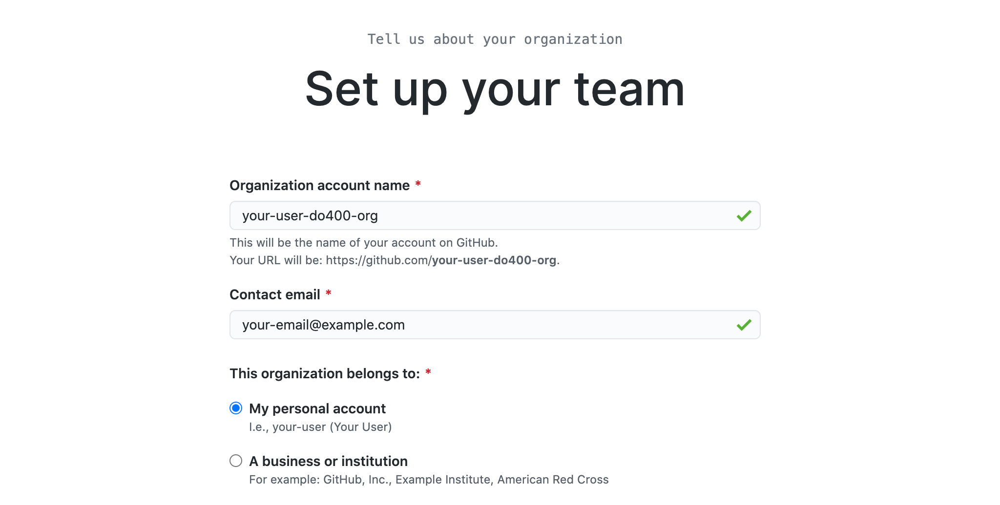
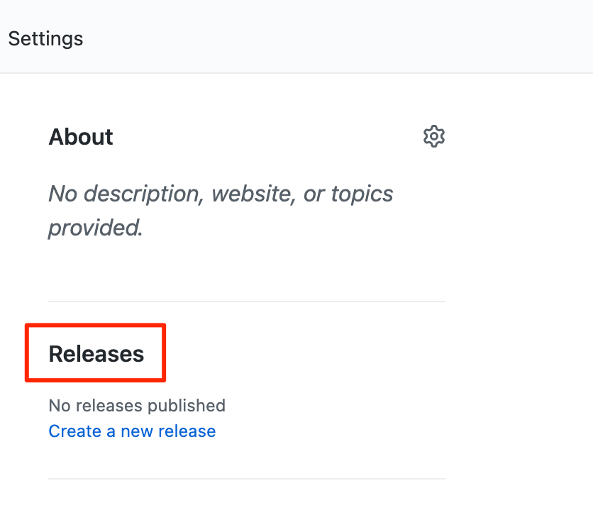
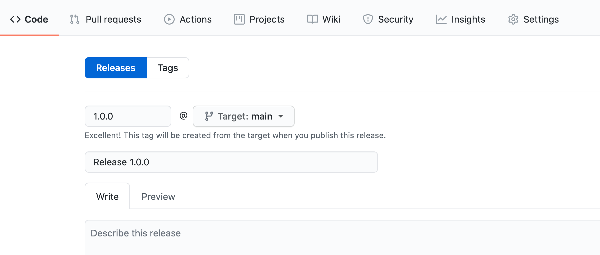
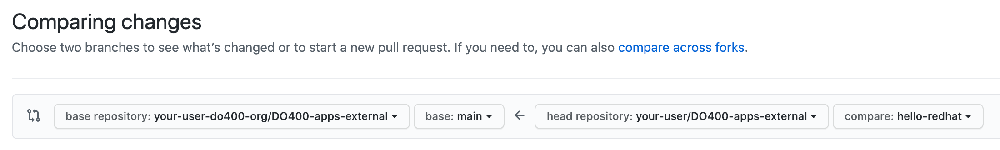

Bonus Exercise: Git outta town!
Acknowledgements
Most of this exercise was taken from our Red Hat DevOps Pipelines and Processes: CI/CD with Jenkins, Git, and Test-driven Development (DO400) course; credit to the Red Hat Training team that developed the course for those elements! Find more great material on using Git for all sorts of things in Chapter 2 of DO400! Ask a Red Hat team member about how you can continue your learning with a Red Hat Learning Subscription or through general Red Hat Training courses!
Goals
Explore setting up a GitHub account and interacting with a remote repository from the command line. You should be able to create tags, publish releases, and use forks to contribute to other repositories.
Prerequisites
To execute this section, you will need a GitHub account with SSH access enabled to the lab machine. It can be either a personal or a work account. If you do not already have a GitHub account, navigate to https://github.com/signup and follow the steps on that interactive page!
Log in to your GitHub account and cache your credentials. Configure your git identity at the user level in your machine.
|
You can skip this step if you already have your git identity setup on your machine. |
Open a new terminal window on your workstation, and use the git config command to set up your user name.
[student@workstation ~]$ git config --global user.name "Your User Name"
Use the git config command to set up your user email.
[student@workstation ~]$ git config --global user.email your@user.email
Use the git config command to review your identity settings.
[student@workstation ~]$ git config --list user.name=Your User Name user.email=your@user.email
To connect to your GitHub account using SSH, we need to follow a few set up steps. Similar steps can be found on the GitHub Docs page titled "Generating a new SSH key and adding it to the ssh-agent"
First we need to generate a new SSH key on the lab machine. Navigate to the terminal window and enter the following command:
[student@workstation ~]$ ssh-keygen -t ed25519 -C "your@user.email"
You will be prompted to enter a file location as well as a passphrase. In all of these steps, hit Enter on your keyboard without entering any information (i.e. leave it all blank).
Start the ssh-agent in the background:
[student@workstation ~]$ eval "$(ssh-agent -s)" >Agent pid 12345
The "pid" will vary depending on your machine.
Add your SSH private key to the ssh-agent:
[student@workstation ~]$ ssh-add ~/.ssh/id_ed25519
Next we need to add the SSH key we just created to your GitHub account. First, copy the SSH public key to your clipboard:
[student@workstation ~]$ cat ~/.ssh/id_ed25519.pub ssh-ed25519 HASH your@user.email
Copy the contents displayed by selecting them in the terminal, right clicking, and selecting "Copy"
Switch to a browser and go to https://github.com and make sure you are logged in. In the upper-right corner click your profile photo and then click the Settings option near the bottom of the menu.
In the Access section of the sidebar, select SSH and GPG keys
Click New SSH key
In the Title field, write "RH Speed Training Key" and leave the Key Type as "Authentication Key"
In the Key text area, paste the contents of your clipboard using right click, and selecting "Paste"
Click Add SSH key
To test your connection, go back to your terminal window and enter the following:
[student@workstation ~]$ ssh -T git@github.com Warning: Permanently added ... Hi USERNAME! You've successfully authenticated, but GitHub does not provide shell access.
If you receive an error "ssh: connect to host github.com port 22: Connection refused…" it means we have to edit a configuration file. The quick fix is to append the following to the .ssh/config file:
Host github.com Hostname ssh.github.com Port 443
Edit the file using the instructions below, or in the manner of your choosing:
[student@workstation ~]$ sudo vim ~/.ssh/config [sudo] password for student: student
Be sure to just add the new information at the end of the existing file, and then save your work.
At this point, you are good to head into the exercise! Note that even if you only made it this far before time ran out, learning how to set up a GitHub account and link it to your machine with SSH is an incredibly valuable lesson!
Instructions
To set up the scenario necessary to complete this exercise, first you must create a new GitHub organization with your GitHub account.
Next, you will create a repository in the organization by forking the source code we provide at https://github.com/RedHatTraining/DO400-apps-external.
The repository forked in your organization will simulate a third-party project in which to contribute.
With the organization set up as a hypothetical third-party project, you will practice a common contribution workflow, forking the third-party project into your username account and creating pull requests back to the third-party project to propose code changes.
-
Create your own GitHub organization. This organization will host your simulated third-party project.
-
Open a web browser and navigate to
https://github.com. -
Sign in with your GitHub credentials. If you do not have an account, then create one.
-
Click the Menu dropdown in the upper right of the window (Looks like a + with a downward arrow next to it) and click "New Organization".
-
Choose the Free plan. Click Create a free organization in the column furthest to the left of the screen.
-
Configure your new organization. Fill in the Organization account name field with the
YOUR_GITHUB_USER-do400-orgvalue. Type your email in the Contact email field. SelectMy personal accountas the owner. If asked to Verify your account, do so by solving the puzzle presented. Check the box to accept the Terms of Service. Click Next. -
In the confirmation screen, click Complete setup. You may have to provide your password to complete this step.
-
-
Create a repository in your organization by forking the
DO400-apps-externalrepository. The newly created repository in your organization simulates a third-party project in which to contribute.-
In a web browser, navigate to the repository located at
https://github.com/RedHatTraining/DO400-apps-external. -
Click
Forkin the upper right and select theYOUR_GITHUB_USER-do400-orgorganization as the namespace. -
In the dropdown, select the Organization you created in Step 1 as the "Owner" and leave the repository name as is. Then click "Create fork." This creates the
YOUR_GITHUB_USER-do400-org/DO400-apps-externalrepository. -
At this point, you have set up the scenario to contribute to a third-party project. You will treat the repository you have just created as the upstream repository, meaning that you will consider this repository as the third-party project you send your contributions to.
-
-
Start contributing to the upstream project. The repository will now be located at https://github.com/YOUR_GITHUB_USER/DO400-apps-external (You will already be on the correct landing page if you are executing this immediately after Step 2).
-
Click the Code dropdown and toggle to the SSH option. Then copy the contents of the command (it will start with git@github.com)
-
Switch to the command line and navigate to your workspace folder.
[student@workstation ~]$
-
Clone the repository by using the
git clonecommand and the copied details.[student@workstation ~]$ git clone git@github.com:USER/DO400-apps-external.git Cloning into 'DO400-apps-external'... remote: Enumerating objects: 151, done. remote: Total 151 (delta 0), reused 0 (delta 0), pack-reused 151 Receiving objects: 100% (151/151), 149.14 KiB | 208.00 KiB/s, done. Resolving deltas: 100% (58/58), done.
Make sure that you clone the repository from your username account and not from your organization.
By default, the
git clonecreates a folder with the same name as the repository and clones the code inside the created folder. You can change the folder by adding the folder name as a parameter of thegit clonecommand.
-
-
Create a tag. Next, create a release by using the created tag.
-
Navigate to the repository folder and create the
1.0.0tag by using thegit tagcommand:[student@workstation ~]$ cd DO400-apps-external [student@workstation DO400-apps-external]$ git tag 1.0.0
-
Use the
git tagcommand to verify that the tag has been created:[student@workstation DO400-apps-external]$ git tag 1.0.0
If Git shows the output by using a pager, press q to quit the pager.
-
Use
git push origin --tagsto push the tag to your username fork on GitHub.By default, Git does not push tags to the remote. To push tags, you must use the
--tagsparameter. If prompted, enter your GitHub username and personal access token.[student@workstation DO400-apps-external]$ git push origin --tags Total 0 (delta 0), reused 0 (delta 0) To https://github.com/your_github_user/DO400-apps-external.git * [new tag] 1.0.0 -> 1.0.0
-
Switch back to the web browser and navigate to the main GitHub page for your fork located at https://github.com/YOUR_GITHUB_USER/DO400-apps-external. Click the Releases link in the right pane.
 -
On the releases page, click Create a new release.
Normally you do not create releases in a forked repository.
You should use forks as a tool to contribute to the upstream repository. Upstream owners can later create releases with your contributions.
-
Start typing
1.0.0in the Tag version field and select1.0.0. This is the tag that you just created. Do not change theTarget: mainselector. -
Enter a value in the Release title field. The Existing tag label should appear under the tag field, confirming that you are using the
1.0.0tag that you created.Finally, click Publish release to create the release. This takes you to the newly created release page.
-
-
Create and merge a pull request from your username fork (origin) to your organization repository (upstream).
-
In your terminal, create a new branch named
hello-redhat:[student@workstation DO400-apps-external]$ git checkout -b hello-redhat Switched to a new branch 'hello-redhat'
-
Inside the
hellofolder, create a new filehellorh.pywith the following content:print("Hello Red Hat!") -
Stage and commit the
hello/hellorh.pyfile:[student@workstation DO400-apps-external]$ git add hello [student@workstation DO400-apps-external]$ git commit -m "added hello Red Hat" [hello-redhat 60db2e8] added hello Red Hat 1 file changed, 1 insertion(+) create mode 100644 hello/hellorh.py
-
Push the new branch to the username fork by using
git push -u origin hello-redhat. The-uparameter is an alias of--set-upstreamand it is used to set the upstream branch. Enter your GitHub username and password if prompted.[student@workstation DO400-apps-external]$ git push -u origin hello-redhat ...output omitted... Enumerating objects: 4, done. Counting objects: 100% (4/4), done. Delta compression using up to 12 threads. Compressing objects: 100% (2/2), done. Writing objects: 100% (3/3), 308 bytes | 308.00 KiB/s, done. Total 3 (delta 1), reused 0 (delta 0) remote: Resolving deltas: 100% (1/1), completed with 1 local object. remote: remote: Create a pull request for 'hello-redhat' on GitHub by visiting: remote: https://github.com/your_github_user/DO400-apps-external/pull/new/hello-redhat remote: To https://github.com/your_github_user/DO400-apps-external.git * [new branch] hello-redhat -> hello-redhat Branch 'hello-redhat' set up to track remote branch 'hello-redhat' from 'origin'.
-
Switch back to the web browser and navigate to the GitHub page of your fork located at https://github.com/YOUR_GITHUB_USER/DO400-apps-external. Click Pull requests to navigate to the pull requests page. In the pull requests page, click New pull request.
-
In the branches selection area, click the compare: main selector to select the
hello-redhatbranch. Observe how you are merging your changes from thehello-redhatbranch of your username fork (YOUR_GITHUB_USER/DO400-apps-external) into themainbranch of the organization upstream repository (YOUR_GITHUB_USER-do400-org/DO400-apps-external). Next, click the Create pull request button to open the pull request creation form.Make sure you do not select
RedHatTraining/DO400-apps-externalas the base repository. -
In the pull request creation form, click Create pull request to submit the form and open the pull request.
When creating a pull request, try to set meaningful titles and descriptions to add better context to your changes.
-
Review your changes and merge the pull request into the
mainbranch of the upstream organization repository. Click Merge pull request. Click Confirm merge on the confirmation form that shows up.You should not normally merge your own pull requests.
In most cases, pull requests are merged by repository owners or maintainers. Consider that, when merging this pull request, you have acted as the owner of the upstream repository.
-
A Delete branch button is displayed immediately after the merge. The branch
hello-redhatis unnecessary now because all of its changes have been merged into themainbranch. Click Delete branch to delete thehello-redhatremote branch.
-
-
Pull changes from your username fork. Check that the
mainbranch is not updated.-
On the command line, switch to the
mainbranch:[student@workstation DO400-apps-external]$ git checkout main Switched to branch 'main' Your branch is up to date with 'origin/main'.
-
Pull the changes from the
originremote. Theoriginremote refers to the repository forked in your username account (YOUR_GITHUB_USER/DO400-apps-external). Enter your GitHub username and password if prompted.[student@workstation DO400-apps-external]$ git pull origin main ...output omitted... From https://github.com/your_github_user/DO400-apps-external * branch main -> FETCH_HEAD Already up to date.
-
Run
git logand notice that your changes from thehello-redhatbranch were not incorporated.[student@workstation DO400-apps-external]$ git log commit c34ac6fcb5eea6ed4c62b665f0bb3b6c18f9a579 (HEAD -> main,
tag: 1.0.0, origin/main, origin/HEAD) ...output omitted...Note how the last commit in the
mainbranch is still the commit tagged as1.0.0. This is because you merged the pull request to the upstream repository (YOUR_GITHUB_USER-do400-org/DO400-apps-external) and not the username fork (YOUR_GITHUB_USER/DO400-apps-external).
-
-
Clean up your local files and the remote repositories and organization. Remove your local
DO400-apps-externalfolder
[student@workstation DO400-apps-external]$ cd .. [student@workstation]$ rm -rf DO400-apps-external
Remove the downstream and upstream repositories.
Go to your GitHub repository settings page at https://github.com/YOUR_GITHUB_USER/DO400-apps-external/settings.
Scroll to the Danger Zone at the bottom and click Delete this repository.
Type the repository name in the popup message and confirm the deletion clicking I understand the consequences, delete this repository. If requested, type your password to confirm your identity.
Repeat the same steps for the upstream repository at https://github.com/YOUR_GITHUB_USER-do400-org/DO400-apps-external/settings
Remove the organization.
Enter the organization settings at https://github.com/organizations/YOUR_GITHUB_USER-do400-org/settings/profile.
Scroll to the Danger Zone at the bottom and click Delete this organization.
Type the repository name in the popup message and confirm the deletion.